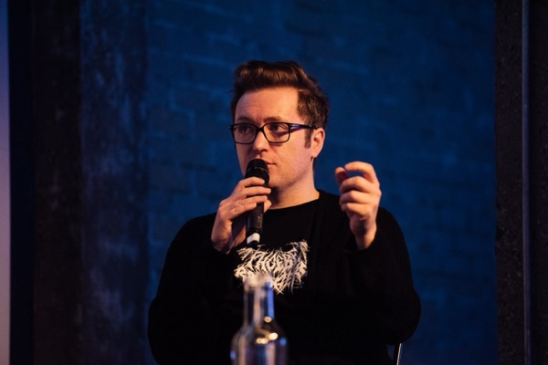
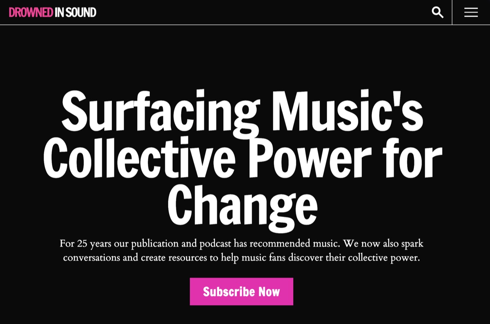
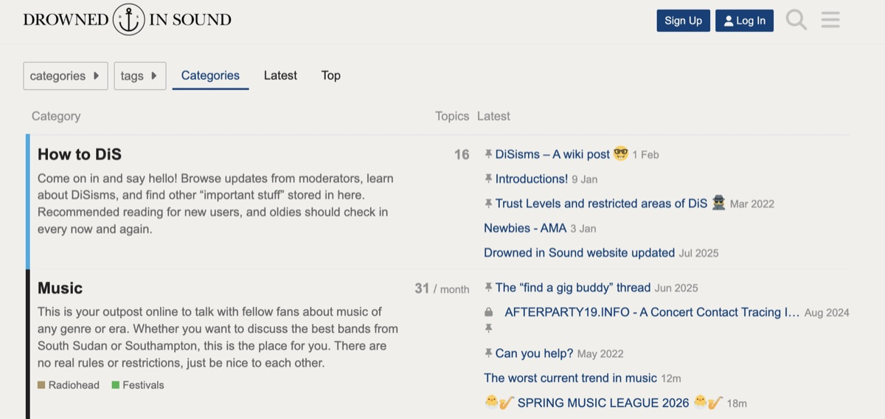
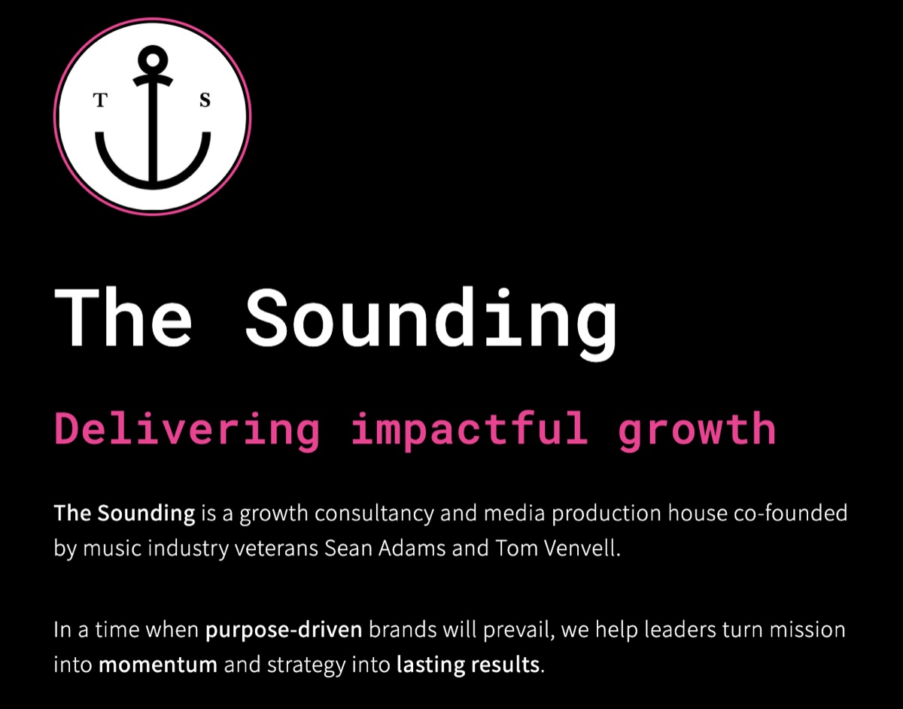

Photo: Jen McCord / SheSaidSo
Founder, Drowned in Sound · Podcast Host · Journalist · Artist Manager
⌄DiS is that hopeful vision in your mind’s eye the Monday morning after Glastonbury.
It’s the goosebumps you got when you first heard Björk, Billie Eilish, Aurora, ANOHNI or Brian Eno speak about the environment in ways that felt far too close to home and made global change feel urgent.
It’s that realisation that your speakers were distorting when you turned Rage Against The Machine beyond eleven.
It’s that moment you truly understood what Dead Prez, Kathleen Hanna or Kendrick Lamar meant about injustice.
It’s not just believing that a new world is possible, it’s working together to make it real.
“Music is upstream from politics.”
I've spent just under three decades building, posting, releasing and experimenting in music - usually a few steps ahead of the zeitgeist.
Back in 1998, I started out reviewing demos by Muse and Coldplay, then launched one of the UK's first music blogs Drowned in Sound, ran its record label that released debut singles by Kaiser Chiefs and Bat for Lashes, and promoted hundreds of grassroots shows.
I've worked with artists from Charlotte Church to Max Richter (running digital campaigns for Studio Richter Mahr alongside his work with UN Human Rights), written a fortnightly column for The Sunday Times, created viral content reaching millions at BBC Radio 6 Music, and ran the strategic comms for a tactical voting campaign that reached 1.75 million people.
Today I co-run The Sounding - a growth consultancy for purpose-driven brands - and founded the Association of Music Editors. The conviction running through all of it: music fans are an untapped political force.
I’m currently managing the complete campaign strategy for The Anchoress (Catherine Anne Davies), a Welsh multi-instrumentalist, self-producing artist, and PhD in literary theory. With two critically acclaimed albums, 20,000+ physical sales, and collaborations ranging from Bernard Butler to the Manic Street Preachers, she represents the kind of uncompromising artist-auteur the industry desperately needs more of.
“For any rock misfit searching for an alternative to the mainstream music press, immersion in Drowned in Sound is a must.”
The Times
Drowned in Sound Podcast Network (launching April 2026)
Conversations about music, power, and what comes next. Recent guests include Enter Shikari, Faithless, Kelly Lee Owens, Gazelle Twin, and Lord Kevin Brennan. 300,000 impressions/month. 50,000 downloads/year. +100% growth in the last 6 months. Sponsored by Qobuz.
My current music obsession: Sofia Isella
A food bank for tickets: how Tickets for Good is changing live music
Our guide to ethical alternatives to Spotify
Gazelle Twin on when boycotts work
A weekly publication about the future of music to 10,000+ subscribers (48% open rate — industry average is around 20%). Solutions-focused journalism investigating streaming economics, venue closures, gender equity, AI, and climate - alongside the music recommendations DiS was built on.

Learn More →Artist Management
Previous clients: Ed Harcourt, Charlotte Church, Juanita Stein, George Pringle. Current client: The Anchoress.
Critical Acclaim
Collaborated With
Notable Admirers
“One of the best albums of the year.”
— Elton John, Rocket Hour
“Wales’s much more explicitly feminist answer to Lana Del Rey.”
— Ann Powers, NPR
A long-time fan who personally invited her to headline his Meltdown Festival.
— Robert Smith, The Cure
The DiS Community
The forums launched alongside the website in 2000, survived the hiatus, and still rack up 2–3 million pageviews a month. A quarter of a century old and still going.

Learn More →The Sounding (co-founded with Tom Venvell, 2025)
A consultancy helping purpose-driven organisations in music and beyond grow without selling out.

Learn More →Association of Music Editors (founded 2025)
A collective voice for editors of music publications, podcasts and zines. Because the attention economy is eating music journalism alive, and someone has to say so.
Learn More →Spotify Exodus series (2025)
DiS’s investigative coverage of the #DisarmSpotify movement sparked a movement among artists and fans, generating 10 million+ campaign impressions.
A survey engaging 8,000 participants that helped drive the UK government to launch a fan-led review of live music.
Learn More →For years, the Breitbart doctrine - “politics is downstream from culture” - was weaponised by the far right to pummel the inclusive world of music with smears and abuse. I believe it’s time to flip that around: culture and working people are upstream of these billionaires and their angry army of riled-up trolls.
Corporate power has consolidated across the music industry in ways most fans don’t see. The same private equity buying up festivals is investing in fossil fuel. Spotify CEO Daniel Ek has invested heavily in military AI company Helsing. Deezer’s Len Blavatnik - who also owns a large stake in Warner Music - has been sanctioned by Ukraine whilst supporting Netanyahu.
Music fans have far more collective power than they realise. Everything I’ve built - from releasing records and promoting grassroots shows to running tactical voting campaigns - has been about building the infrastructure for that power to be discovered and used.
25 years. 5 eras. From email fanzine to podcast network — via record label, festival stages, artist management, BBC Radio 6 Music, and a tactical voting campaign that reached 1.75 million people.
1997
Record shop assistant, FM Music / Falcon Records
“More like Empire Records than High Fidelity.”
1997
Club promoter, Verdis Weymouth
Weekly live nights booking Ash, Cooper Temple Clause, jj72, Toploader. Also built the venue’s website.
1998 ★
The Last Resort email fanzine
Reviewed first demos by Muse, Coldplay, Cooper Temple Clause. Some of their very first interviews.
2000 ★
Drowned in Sound launched
Website, community forums (still running: 2–3m pageviews/month today), club nights at the Barfly, Dublin Castle, Notting Hill Arts Club.
2003 ★
DiS Recordings launched
Debut releases by Kaiser Chiefs, Bat for Lashes, Emmy the Great, Martha Wainwright (80k CDs), Metric, The Stills, Brett Anderson.
2005
DiS podcast launched
One of the UK’s first music podcasts. Won Best Podcast, Record of the Day 2006.
2006
Observer: DiS ranked #9 Top 25 Websites
Best Online Music Publication (Record of the Day 2007).
2008
The Quietus launched from DiS
Spawned and funded from a DiS ad revenue advance.
2008
Love Music Hate Racism partnership
Tours and LMHR Carnival, Victoria Park.
2009
Sunday Times “My Generation” column
Fortnightly column on music × technology × commerce, Culture section (to 2012).
2010
Spotify playlist curator
Monthly playlists for Spotify’s official blog (to 2011). Best Publication, Record of the Day 2010.
2012
Artist management begins (CCCLX Music)
Ed Harcourt, The Anchoress.
2015
Independent Music Monday playlists
Weekly playlist celebrating best indie label releases, supported by [PIAS] (to 2017).
2015
Soho Radio host
Regular show for nearly six years (to 2021).
2016
BBC Radio 6 Music - Social Media Producer
Managed social strategy, created viral content. Also covered BBC Radio 2 (to 2021).
2019
DiS goes on hiatus
Ad rates collapsed from £3–8 CPM to 25p. 3 million annual readers but the business model broke. Community forums continued.
2021
Digital consultant, Studio Richter Mahr
Ran digital campaigns for three Max Richter albums and helped launch Studio Richter Mahr, alongside his work with UN Human Rights (to 2022).
2022
Charlotte Church - artist management
Navigating her transition to politically engaged independent artist (to early 2026).
2022
The Trawl - podcast editor & engineer
Political podcast with Marina Purkiss & Jemma Forte. Subsequently joined Goalhanger (Gary Lineker) family.
2023 ★
DiS relaunched as newsletter + podcast
Moved from Substack to Ghost for ethical reasons. Mission: surfacing music’s power for change.
2024
StopTheTories.vote - strategic comms
Tactical voting campaign with Carol Vorderman. Reached 1.75 million people.
2024
Music Fans Voice survey
8,000 participants. Helped drive UK government fan-led review of live music.
2025 ★
The Sounding co-founded with Tom Venvell
Transmedia production house and growth consultancy for purpose-driven brands.
2025 ★
Association of Music Editors founded
Collective organising for editors of music publications, podcasts, and zines.
2025
Qobuz becomes DiS podcast title sponsor
Partnership with ethical streaming platform. Featured in TechRadar.
2025
Spotify Exodus investigative series
Coverage of #DisarmSpotify catalysed artist/fan movement. 10m+ campaign impressions.
2025
Huck 82: “We Gotta Get Through This”
Feature on the crisis in music journalism and the Association of Music Editors.
2026 ★
DiS Podcast Network launches
Three shows: The DiS Podcast (host), Sounds Like Change (producer), How Music Can Save The World (producer). 300k impressions/month, 50k downloads/year, +100% growth.
🗳️ Tactical Voting
Oversaw strategic comms for StopTheTories.vote alongside Carol Vorderman, reaching 1.75 million people during the 2024 UK general election.
📻 BBC Radio 6 Music
Social Media Producer for 4+ years (2016–2021), managing the station’s social strategy and creating viral content.
🕊️ Max Richter / UN Human Rights
Digital consultant for Studio Richter Mahr (2021–2022), running three album campaigns and helping launch the studio, alongside Richter’s work with UN Human Rights.
🎙️ The Trawl
Edited and engineered the political podcast hosted by Marina Purkiss and Jemma Forte. It subsequently joined Gary Lineker’s Goalhanger family of podcasts.
📰 The Sunday Times
“My Generation” columnist in the Culture section (2009–2012).
🎵 Soho Radio
Host for nearly six years (2015–2021).
✊ Campaigning
DiS has worked with Love Music Hate Racism, Music Declares Emergency, Amnesty, and a range of other orgs.
Speaking & masterclasses
I speak about music, power, platform ethics, and the future of independent culture. Past talks at SXSW, Iceland Airwaves, Primavera Pro, Tallinn Music Week, and Tony Wilson’s In The City. I also run masterclasses at BIMM, EEMA, and ICMP — available to book for music industry education programmes.
Book a talk or masterclassPodcast guest
I’ve been hosting and making podcasts since 2005. I talk well about music journalism, streaming economics, independent culture, platform ethics, and the politics of music fandom. Happy to appear on shows that ask good questions.
Get in touchConsultancy (The Sounding)
Growth strategy, content, and campaign work for purpose-driven organisations in music and beyond. Co-run with Tom Venvell.
Visit The SoundingDiS partnership
10,000+ newsletter subscribers. 48% open rate (industry average: ~20%). 300K podcast impressions/month. An audience that actually cares — about music, ethics, and what comes next.
Talk to usAwards
Judging
BRITs Critics’ Choice, AIM Awards, BBC Sound of…, BT Music Awards, Music Producers Guild Awards, Scottish Album of the Year (SAY Award)
Speaking
SXSW, Iceland Airwaves, Tallinn Music Week, Tony Wilson’s In The City, Primavera Pro, SoAlive (Sofia), Live At Leeds, New Zealand touring conference. Masterclasses at EEMA, BIMM, and ICMP.
Press & Interviews
DiS Recordings was founded in 2003 as an extension of the DiS editorial. Relaunched in 2023. Full catalogue on Discogs and Bandcamp.
thisGIRL
Uno
Martha Wainwright
Martha Wainwright
80,000 copies sold
Redjetson
New General Catalogue
Jeniferever
Choose A Bright Morning
Metric
Live It Out
UK release
The Stills
Without Feathers
Brett Anderson
Brett Anderson
Solo debut from the Suede frontman
Emily Haines & The Soft Skeleton
Knives Don’t Have Your Back
Solo project from the Metric frontwoman
Youthmovies
Good Nature
Martha Wainwright
Sans Fusils, Ni Souliers, À Paris
Licensed to V2
The Anchoress
Versions
Label relaunch release
CCCLX Music
Established 2013 as a management/label hybrid for Ed Harcourt’s independent material.
Hiraeth Records
The Anchoress’s own imprint, co-established with Sean Adams.
Kaiser Chiefs
Oh My God (2004)
Multi-platinum albums, arena headliners
Bat for Lashes
The Wizard (2006)
Signed to Echo/Parlophone, Mercury Prize nominations, global critical acclaim
Martha Wainwright
Debut album (2005)
80,000 CDs sold, sustained international career
Blood Red Shoes
Early singles (2005–06)
Signed to V2/Jazz Life, multiple albums, extensive touring
Emmy the Great
Secret Circus (2006)
Signed to Close Harbour, acclaimed debut album
Metric
UK releases (2006–07)
Major international success, Juno Awards, festival headliners
Brett Anderson
Solo album + live series (2007)
Suede reunion, continued solo career
Emily Haines
Knives Don’t Have Your Back (2007)
Continued success with Metric, solo career
Ed Harcourt
Back Into The Woods (2013)
Produced Sophie Ellis-Bextor’s comeback album, wrote for Paloma Faith and James Bay, Burberry campaign
The Anchoress
Versions (2023)
PROG Award winner, Manic Street Preachers collaborator, new album forthcoming
As seen in & worked with
“It is better to be a flamboyant failure than any kind of benign success.”
Malcolm McLaren